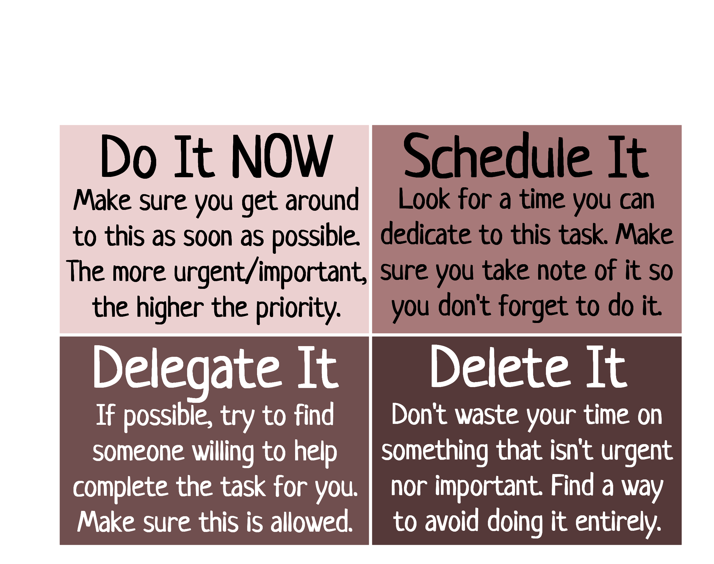

My Growth

Coming to NUAMES was one of the hardest things I've ever done. It's required me to grow in ways I never imagined, become a person I never was, and see the world in a whole new light. Before starting this semester, school was relatively easy. I attended Sunset Jr. High for three years, which had a far different approach to education than NUAMES. While I did have to do copious amounts of work there, it was nowhere near enough to prepare me for this.
Starting out, I wasn't entirely sure what I was getting into. I didn't bring any friends from freshman year, so it was just me facing the demons of high school. It didn't take long for me to notice just how much there was to do, and I had to learn to deal with that as soon as possible. Managing time is far from universal; everyone does it differently. Up to this point, I had tried around eight different methods and services for keeping myself on a schedule, and none seemed to work very well. Though my current methods are not as refined as they could be, they are as good as they have ever been.

My social life wasn't terribly amazing going into this semester. As an introvert, becoming comfortable with new people is extremely challenging. In a classroom setting, I can easily be a top participant with little to no issue seeing as I reveal no personal information in doing so. Making lasting relationships requires a willingness to become vulnerable, and that is difficult to muster around those you do not trust. Thankfully, the barrier is weakening little by little as I have more meaningful conversations with others.
Time Management

One of the most vital skills taught in FYE was time management. As high-school/college students, there are so many things for us to do each day that we have to balance somehow. For most of the semester, AP Biology has been my primary focus due to the abnormally heavy workload; however, I took four CE courses along with two normal ones that took dilligence and discipline to pass.
We discussed many ideas for how to become more efficient with our time, such as the Eisenhower Box (developed by former US President Dwight D. Eisenhower). This model is meant to act as a guide for what to prioritize in a very general sense. On the other hand, we took a moment to mention that boredom is good... sometimes. Ideas can be hard to come by when our mind is constantly switching focus, so allowing it to wander can be beneficial.
So, how have I implemented these concepts? Well, around the start of the year, I remembered a YouTuber I used to watch that promoted a website called Trello. This is designed to arrange tasks into a "board," which other people can contribute to and essentially work as a team on a particular project. I decided to give it a shot (albeit without a team), and I've been using it since then. I also use a planner on occasion, but it's less practical for me to do so. Above is a screenshot of my main board I use to track all my assignments and things like that.
16 Personalities

Our personalities play a pivotal role in how our minds operate, which is particularly important in a collegiate setting. There are loads of personality tests online, but tests like 16 Personalities (a free, slightly altered version of MBTI) have solid research behind their claims. As the title suggests, this test sorts you into one of 16 primary personality types based on four spectrums:
| Mind | Introversion | ⟷ | Extroversion |
| Energy | Intuitive | ⟷ | Observant |
| Nature | Feeling | ⟷ | Thinking |
| Tactics | Judging | ⟷ | Prospecting |

The creators of 16 Personalities were kind enough to explain exactly what these aspects refer to. Mind "shows how we interact with our surroundings", or put another way, describes how our mental energy is drained and recharged. Too much stimulation is draining to introverts, but it's rejuvenating to extroverts. On the other hand, a peaceful environment rejuvenates an introvert, although this would drain an extrovert. While this is aspect is usually associated with social life, it applies to much more than that.

Next, Energy "determines how we see the world and process information". An intuitive person is likely to focus on hypotheticals and the future. The past nor present are terribly appealing to them because there's no mystery involved. An observant person, however, focuses on what has happened and what is happening. They are very practical individuals, giving very little space for what isn't immediately useful.

Third, Nature "determines how we make decisions and cope with emotions". On a very basic level, a feeling individual will base decisions more on their emotions than the facts. They tend to have a great sense of empathy and compassion towards others, and they will try their best to avoid conflict. A thinking person bases most of their decisions on logic and reasoning rather than their own or others' feelings. While they do care about other people, getting things done is often more important than avoiding conflict.

Finally, the aspect of Tactics "reflects our approach to work, planning, and decision-making". For a judging individual, organization is key to their strategy. What they do is often deliberate and planned in advance. On the other hand, prospecting individuals prefer to go with the flow and make decisions at a moment's notice. Planning nor organization are strong-suits for them, but they can still make things work nevertheless.

Out of the 16 personalities, the test identified me as a Mediator (INFP). While I won't get into exactly what that means because I already described each aspect in detail above, its applications are worth mentioning. Studying is best done independently by going over facts and visuals. For the best performance in the classroom, it's important to actively engage in the lesson and participate often. Additionally, time management for tracking deadlines can prevent procrastination from taking over. In general, seeking constructive criticism is a good idea, but it's especially helpful for Mediators.

Surprisingly enough, I've alerady been applying most of those strategies; however, I could certainly improve my study skills and seek more constructive criticism. Once I've gotten into a habit of doing all of those, I imagine it'll help quite a lot with my education.

This was by far my favorite unit in this course due to its incredible descriptive accuracy, engaging nature, elegant presentation, and overall applicability. I was stunned by just how much the article about Mediators said about me, despite me only telling it around five minutes of information. Their website is clean with great graphic design, and it's frankly a shame I cannot use any of their assets here. If nothing else, the activity where we were separated by aspect and told to collaborate on a particular task was a refreshing start to my brutal weekday routine.
Annotation

If there's one skill worth mastering in an educational setting, it'd be notetaking/annotation. Especially with college-level lectures, the instructor is not going to slow down so you can write all the information down. Even if they did, you typically shouldn't write every little detail in your notes. A good set of notes can be easily skimmed for the general gist of what the lecture was about while still containing enough detail to prepare for an exam. Annotation is similar, but it's not placed under as extreme of a time-limit. Articles are hard to read quickly and efficiently, so if possible, it's good to highlight and annotate them so you don't have to read it all. I won't be covering annotation strategies here, but most of it comes down to being concise, consistent, and conservative with your methods. To demonstrate normal notetaking strategies, I'll use my notes from the Money Management lecture and adapt them to the format.
Out of the many notetaking strategies, we covered six common ones in the lecture. For simplicity, I will only consider three of those. The first is the Outline Method, which breaks the material into large sections and adds smaller details within those. This is great for jotting down notes in a fast-paced lecture, but they likely won't be as organized or detailed as they should be for studying purposes. Outline is the method I personally use, but I don't think it's the best one for my purposes.
The Cornell Method is an expansion on text-based notes designed to maximize information retention. On a normal paper of dimensions 8.5" × 11", reserve a 6" × 9" area for whatever note strategy is relevant. To the left of that, use the 2.5" × 9" area for the cue. This area is where you will jot down potential exam questions, main ideas, and vocabulary shortly after the lecture. With the remaining 8.5" × 2" area, summarize that page in a sentence or two, only keeping the key details. This should also be done after the fact, but do it a bit later. The specifics of how this method works can be found in the link above, but it's worth noting here that there are five "R's" of notetaking that work fairly well with this format:
- Record: write as much relevant info as possible
- Reduce: summarize info neatly and concisely
- Recite: try to recall the info and verify
- Reflect: connect material to other topics
- Review: study for a few minutes every week
The Map Method was by far the hardest example to recreate for this demonstration. The motivation behind this one is that, if there are many interconnected ideas, it's best to visualize those connections. Usually, you'd mostly use text inside the nodes; however, I decided against it for legibility. While I've never particularly enjoyed this type of notetaking strategy, I can see why some people would benefit from using it. With digital notes, this method is generally not a good idea because of how long it takes, but it could work fairly well on paper.

Taking notes is a skill I am unfortunately lacking in. I think the notes above turned out pretty well, but these digital demonstrations were created weeks after the lecture. In a fast-paced setting, I often miss important details because I can't keep up with the information load. Like I said earlier, I use the Outline Method in the classroom. It's fairly simplistic, so they don't take super long to write, but I also cannot use them to review very well. To remedy this, I reckon I could try doing the Cornell Method and see how that goes.